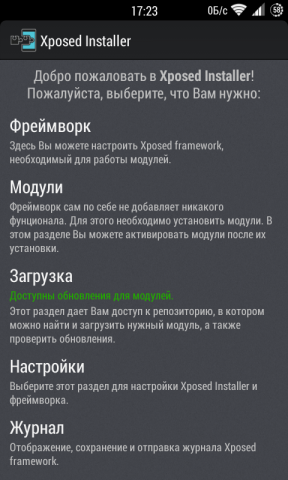
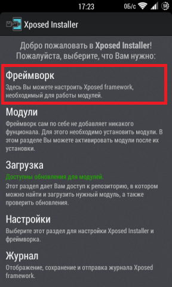
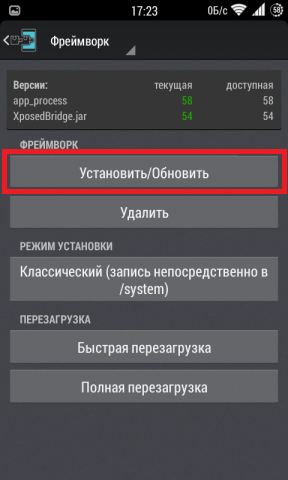
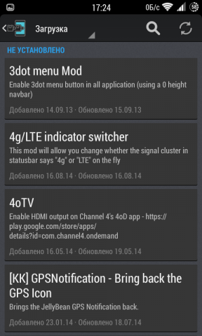
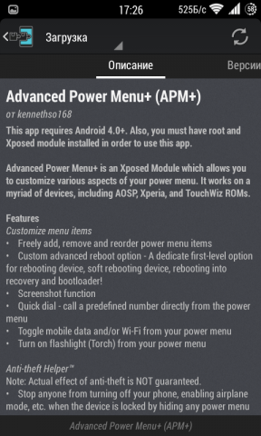
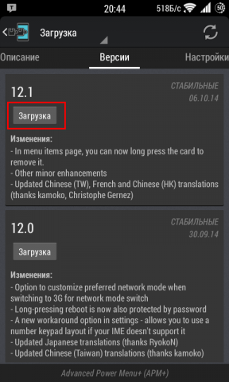
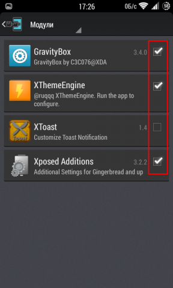

Xposed Installer
Операционная система Андроид является довольно «гибкой» и настраиваемой. Практически любой пользователь сможет изменить её под свои вкусы и потребности, а делать это не тяжело и под силу даже новичкам. Для получения дополнительных возможностей своего Андроид гаджета, пользователям приходится ставить различные лаунчеры (например, Apex), альтернативные прошивки и рекавери. В свою очередь это несет потерю гарантии и возможность «убить» свой девайс, поэтому не каждый рискует делать это.
Но последнее время появился не плохой альтернативный вариант всем вышеперечисленным вариантам. На зарубежном форуме разработчиков XDA-Developers, пользователи rovo89 и Tungstwenty разработали приложение Xposed Installer, которое с помощью специальных модулей значительно может расширить функциональность Андроид устройства и при этом с минимальными рисками.
Требования:
1) Root права
2) Android 4.0 и выше.
Если требования выполнены, то переходим к инструкции по установке Xposed Installer:
Установка:
1)
Xposed
Installer – полностью бесплатное приложение, которое
находится в открытом доступе, скачиваем его с сайта 4PDA, для этого
переходим по этой
ссылке.
Там находим
нужную версию для Вашего гаджета (ориентируясь на версию Android)
2) После скачивания устанавливаем его, предварительно включив в настройках безопасности возможность установки приложений с «Неизвестных источников»;
РЕКОМЕНДУЕТСЯ
СДЕЛАТЬ РЕЗЕРВНУЮ КОПИЮ УСТРОЙСТВА!
Отлично, установка выполнена, теперь переходим к настройке утилиты:
1) Запускаем Xposed Installer и предоставляем рут доступ;

2) Выбираем пункт меню «Фреймворк»;

Важно! Возможно, что после установки фреймворка гаджет может не загрузится. Если Вы не знаете термина «бутлуп» и не знаете, как восстановить устройство при такой ситуации, то лучше не устанавливать фреймфорк, в противном случае ответственность находится на Вас.
3) Нажимаем на кнопку «Установить/Обновить», данным действием будет установлена последняя доступная стабильная версия;

4) Перегружаем устройство;
Теперь Ваше устройство готово к работе!
Заметим, что после установки фреймворка визуально ничего не изменилось, но теперь можно устанавливать специальные модули.
В данном случае не нужно пересматривать миллион сайтов в поисках необходимого модуля для программы, разработчики позаботились, чтобы все было предельно просто и доступно для этого:
1) Запускаем приложение;
2) Выбираем пункт «загрузка»;

3) Выбираем любой из списка ниже, читаем его описание;

4) Если модуль нас заинтересовал, то производим его загрузку;

5) Для активации модуля переходим в раздел модули и ставим галочку напротив нужного*;

6) Перезагружаемся
* Если Вы не довольны работой модуля, то для его отключения необходимо снять соответствующую галочку в разделе "Модули" и перегрузить устройство.